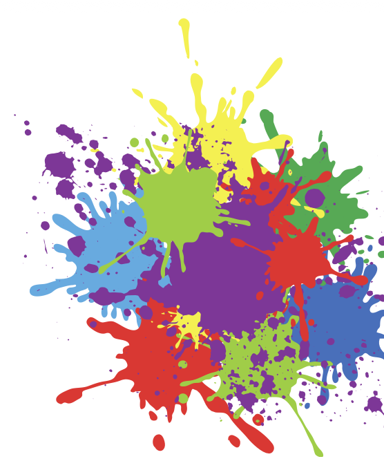
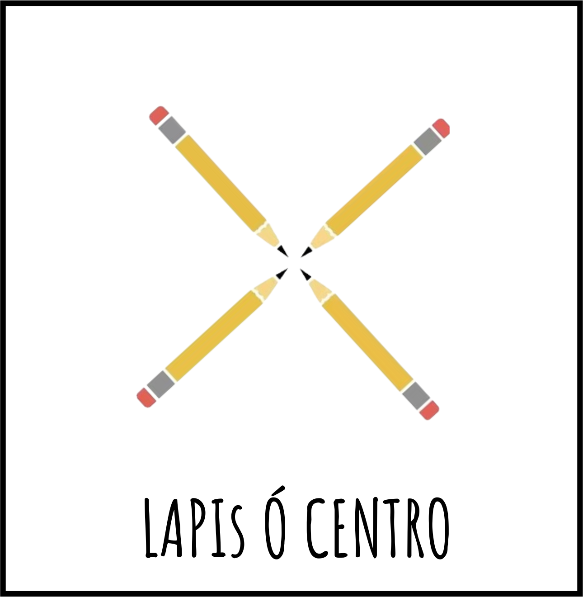
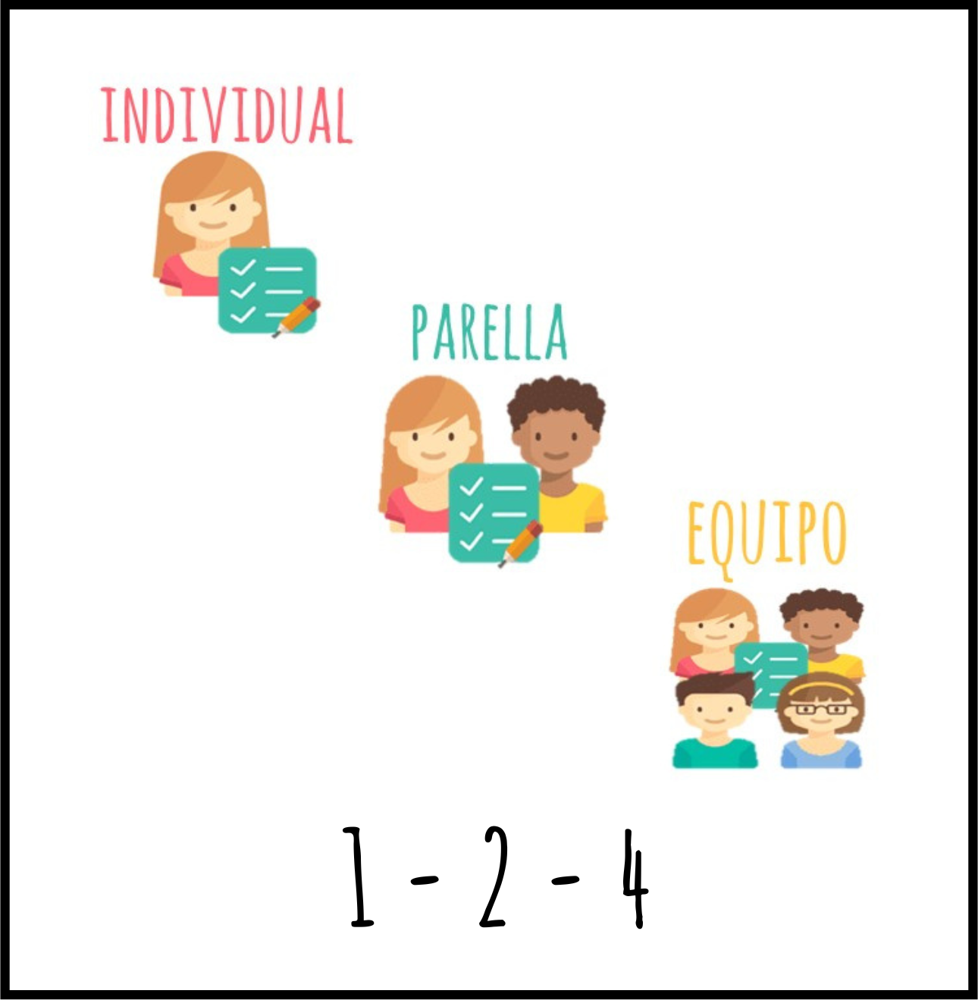
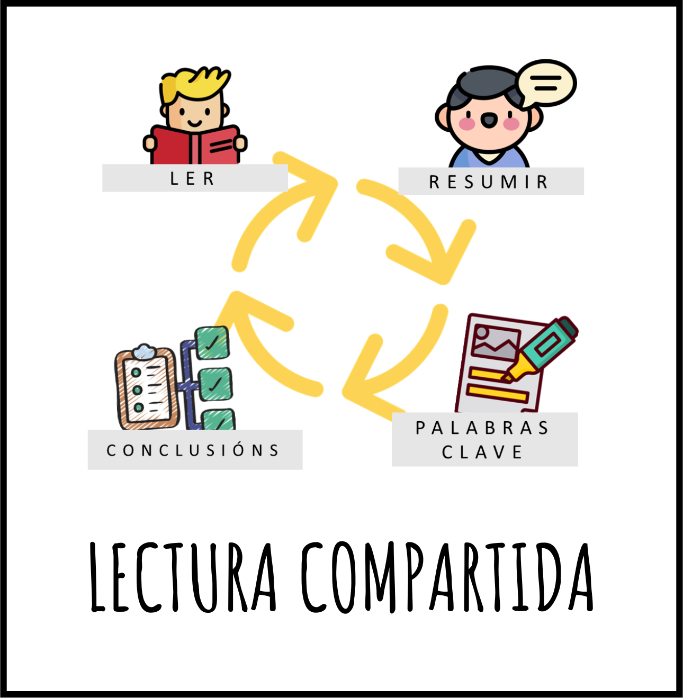
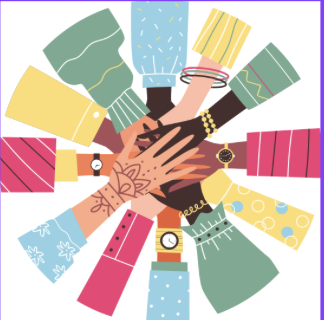
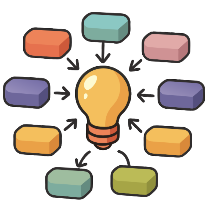
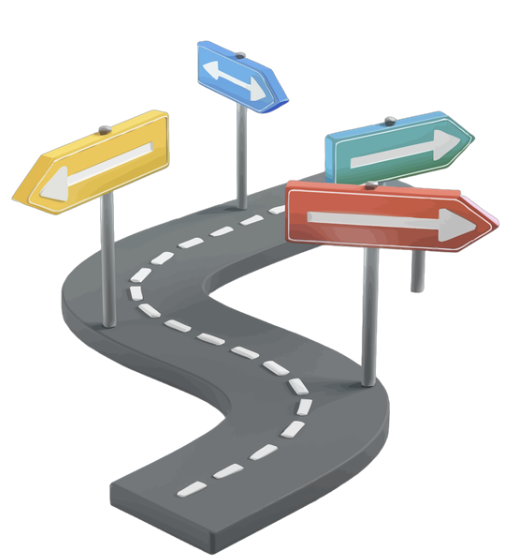
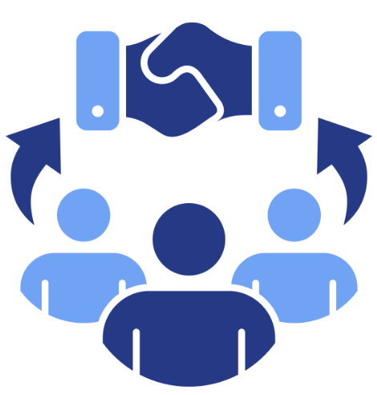
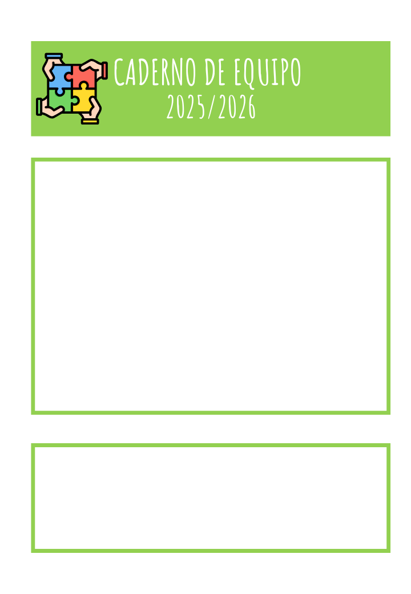

A aprendizaxe cooperativa como recurso para a inclusión.
O alumnado aprende CO seu equipo e DO seu equipo.

A nivel centro seguimos o Manual Cooperar para Aprender / Aprender a Cooperar de Pere Pujolàs e José Ramón Lago (2011), aplicando os tres ámbitos da ruleta da cooperación para estructurar o traballo en equipo na aula.
No meu papel como PT traballo coa tutoría para garantizar a presenza e participación dos meus alumnos no seus equipos correspondentes. Para isto, é imprescindible seguir os tres ámbitos.
Ámbito A: Cohesión dos equipos
Antes de aprender en equipo é necesario construir cohesión de grupo. É importante que o alumnado confíe e se sinta parte do grupo para logo axudarse e aprender xuntos.

No noso centro, a cohesión realízase no mes de setembro onde dedicamos as horas de proxectos a realizar dinámicas de cohesión.

Un exemplo é Mundo das Cores, unha dinámica que axuda ao alumnado a reflexionar e empatizar sobre como se sente unha persoa cando non é aceptada nun grupo.
Ao longo do curso, a cohesión segue presente mediante os círculos da palabra ao inicio e final das sesións.
Ámbito B: Estructuras Cooperativas
As estruturas cooperativas son un recurso para garantir a accesibilidade do alumnado, tendo en conta os diferentes ritmos e capacidades. Ao organizar a tarefa con estruturas claras, a actividade multinivélase, permitindo que todo o alumnado participe e acceda á aprendizaxe segundo as súas posibilidades.
A continuación expoñemos as principais estructuras utilizadas dentro dos proxectos no meu centro educativo.
Folio xiratorio
O equipo constrúe unha resposta nun mesmo folio por quendas: cada persoa achega unha parte e pásao á seguinte ata completar a tarefa.
Lápis ó centro

1º. Constrúese o significado en equipo, pensando de maneira compartida.
2º Cada membro produce a súa resposta.
1-2-4

Organización da tarefa en 3 momentos:
Momento 1. Cada alumno reflexiona de maneira individual, e damos resposta de forma multimodal.
Momento 2. Compartese a reflexión coa parella, chegando a un consenso.
Momento 3. Ponse en común todas as respostas, constrúese unha resposta común.
Lectura compartida

Repártese a carga cognitiva que supón a comprensión lectora da seguinte maneira:
O alumnado le o texto en equipo e asume distintos roles: ler, resumir, identificar palabras clave e elaborar unha conclusión. Cada parágrafo trabállase seguindo esta secuencia, mentres un le un parágrafo o seguinte resume, o seguinte identifica palabra clave e o seguinte encárgase da conclusión. De esta maneira constrúese a comprensión do texto entre todo o equipo.
Algúns alumnos/as non poderían acceder á lectura do texto de maneira individual, polo que esta estrutura favorece moito a accesibilidade comunicativa.
Por que estas estruturas forman parte da miña intervención como PT?
- Aseguramos a participación de todo o alumnado.

- Fomenta a interdependencia positiva: o resultado final é do equipo.
- Axuda a organizar ideas, obtendo moitos puntos de vista.

- Cada quen contribúe de distintas maneiras (unha palabra, unha frase, unha idea, un exemplo, unha revisión, un debuxo…).

- Accesibilidade comunicativa: permitimos ditar a un compañeiro, sinalar opción, usar teclado, comunicador…

Ámbito C: Conciencia, Autoregulación e Avaliación
Equipos heteroxéneos
En traballo cooperativo coa tutora da aula, como PT participo creando os equipos de maneira heteroxénea.

Caderno de equipo
Axuda ao alumnado a aprender a traballar en equipo de forma consciente e organizada.
Un caderno de equipo en cada trimestre, coas seguintes partes:

Caderno de equipo completo- Nome e logo
- Membros do equipo e firma.
- Cargos ou roles
- Diario de sesión: Podendo anexarse as necesarias segundo o proxecto.
- Obxectivos de equipo
- Compromisos individuais para o traballo en equipo.
- Avaliación dos obxectivos do equipo, compromisos individuais